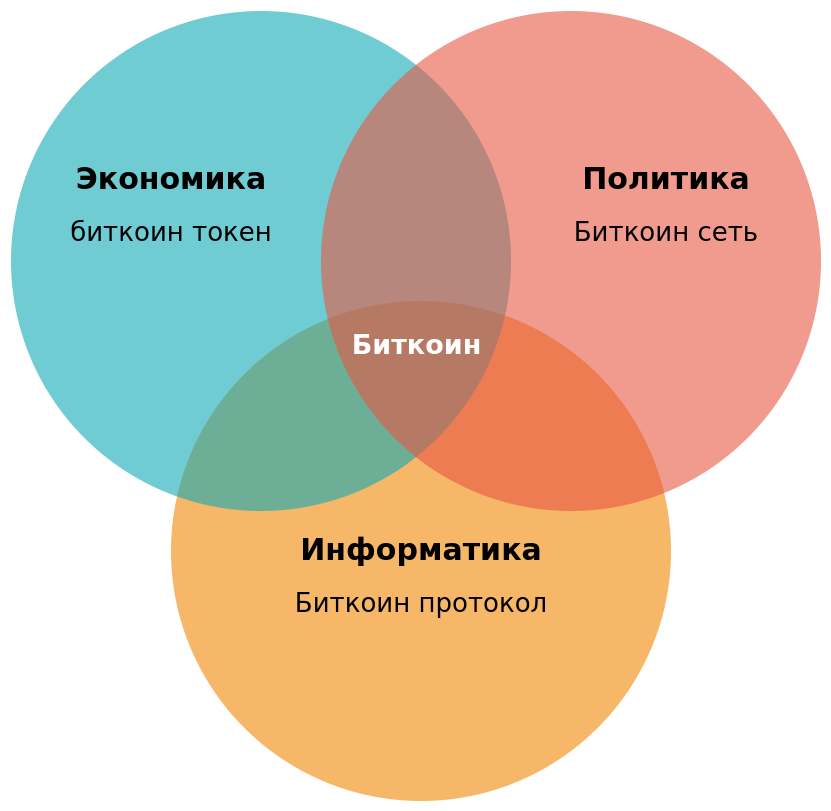
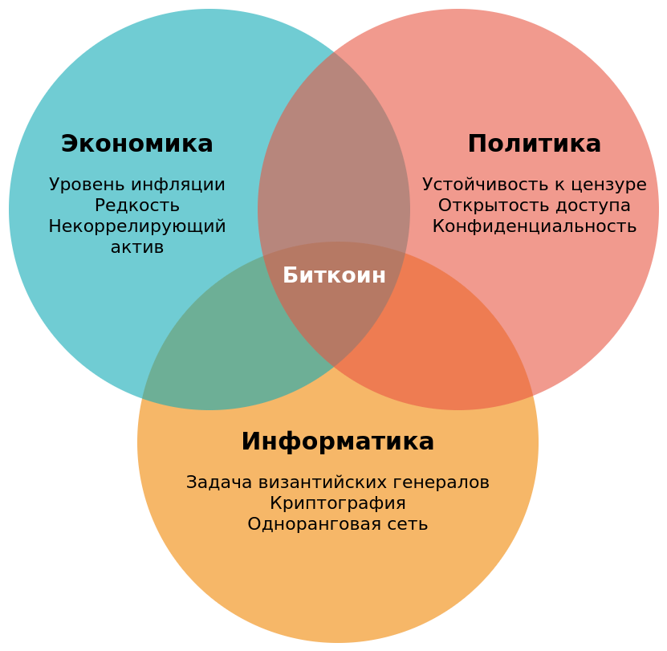

(Press ? for help, n and p for next and previous slide)
криптовалюта, использующая технологию блокчейна для записи транзакций


Деньги
Язык для коммуникации ценности во времени и пространстве
Роли: